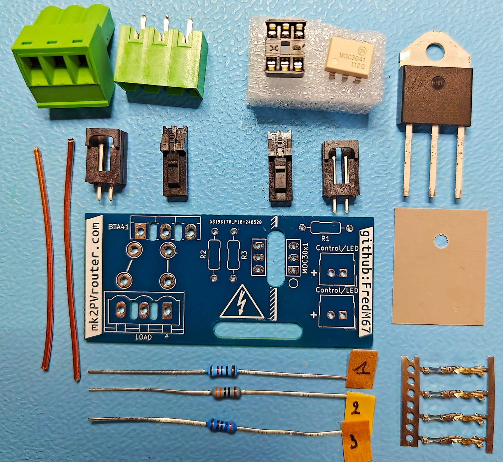
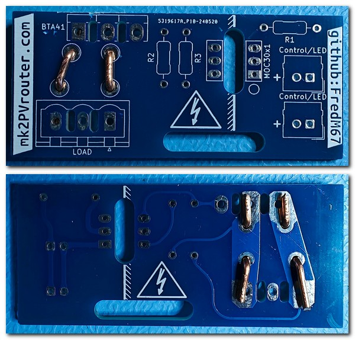
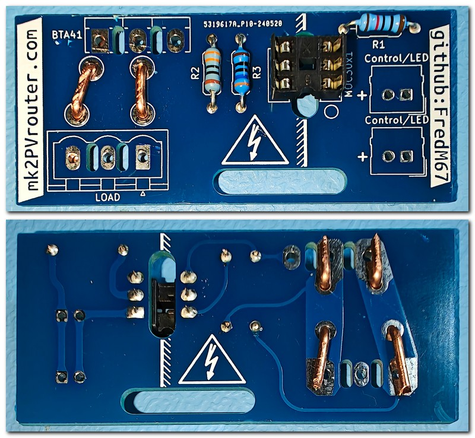
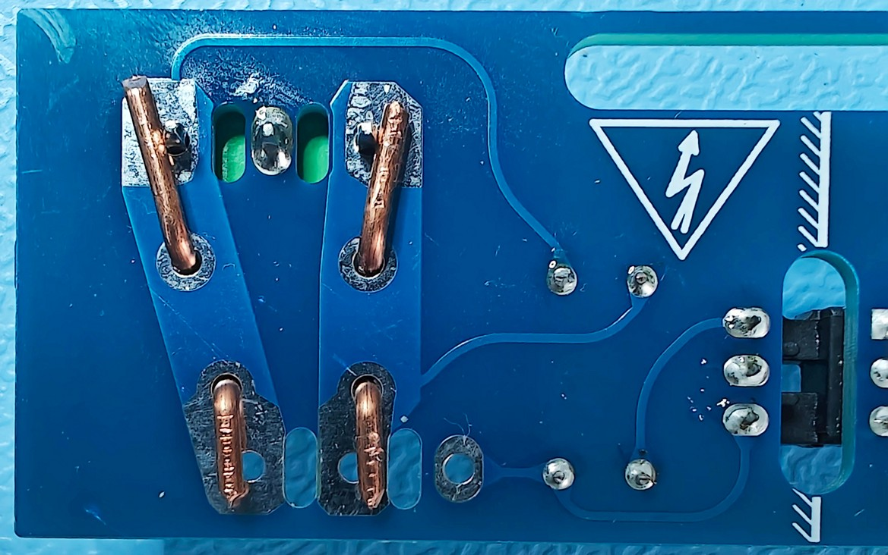
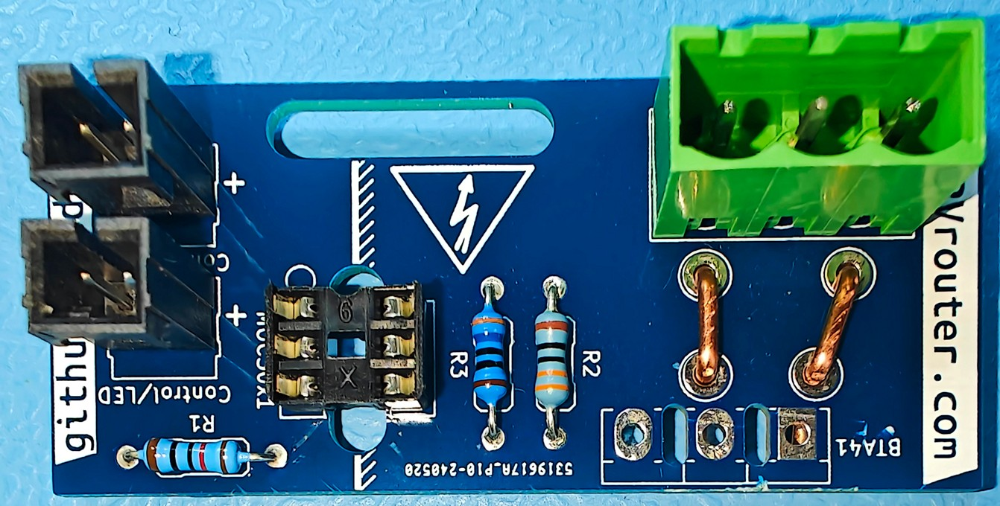
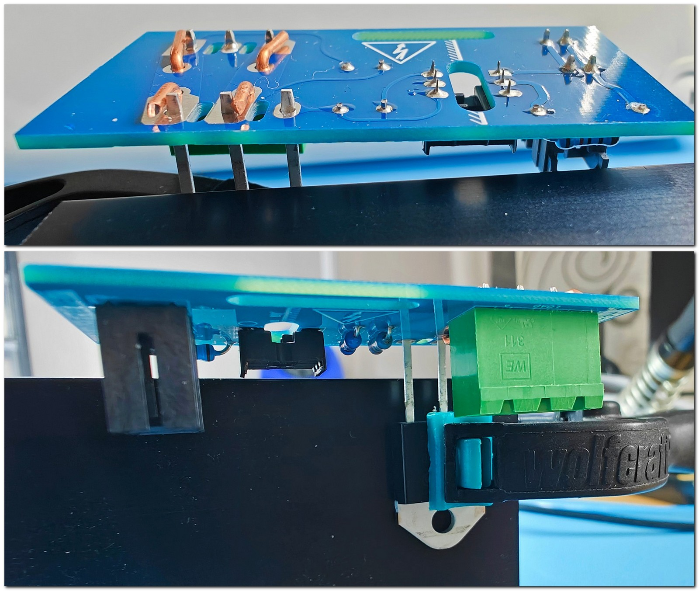

Étage de sortie
Principe de Fonctionnement d’une Sortie Triac
Contrôle de la Puissance
Applications typiques
Éclairage : Les dimmers, ou variateurs de lumière, exploitent les triacs pour moduler l’intensité lumineuse. En ajustant le moment d’activation du triac, il est possible de faire varier la luminosité des lampes.
Chauffage : Dans le cas des chauffages électriques, les triacs servent à contrôler la température. En changeant la durée pendant laquelle le courant est conduit, on peut régler la quantité de chaleur émise par l’appareil de chauffage.
Avantages comparés à un relais
Contrôle Fin : Le triac offre une gestion très précise de la puissance, ce qui est parfait pour les applications nécessitant un ajustement délicat.
Commutation Sans Bruit : À l’inverse des relais mécaniques, les triacs fonctionnent sans produire de bruit de clic caractéristique lors de la commutation.
Absence de Composants Mobiles : Le fait qu’il n’y ait pas de composants mobiles diminue l’usure due au mouvement, ce qui rend le système de commutation plus fiable et prolonge sa durée de vie.
Considérations Techniques
Dissipation Thermique : L’utilisation des triacs entraîne une production de chaleur pendant leur fonctionnement. Il est crucial d’assurer une bonne évacuation de cette chaleur, généralement à l’aide de dispositifs tels que des radiateurs ou des dissipateurs thermiques.
Compatibilité de Charge : Du fait que le triac interrompt le courant de manière périodique, seuls les équipements résistifs (comme les chauffages ou les lampes) sont adaptés pour être contrôlés par un triac.
Composition d’un kit pour étage de sortie triac
Ce kit contient tout le nécessaire pour assembler un circuit de sortie :
Un circuit imprimé qui distingue clairement les zones de basse et de haute tension de chaque côté.
Une résistance R1, dont la valeur est choisie en fonction de la tension nominale du système et du modèle d’optocoupleur utilisé.
Une résistance R2, sélectionnée selon le modèle d’optocoupleur.
Une résistance R3.
Un support DIL pour l’optocoupleur, comportant deux rangées de trois broches.
Deux paires de connecteurs type Molex.
Un isolant qui assure à la fois l’isolation électrique et la conduction thermique.
Un triac, adapté aux exigences spécifiques de l’application.
Un connecteur de puissance qui dispose habituellement de trois broches, la broche centrale étant inutilisée.
Un morceau de cuivre massif de 1.5 mm² de section.
{kind=link}

Contenu d’un kit de sortie
Assemblage d’une carte de sortie
Pour les cartes de sortie, nous allons procéder de façon similaire, dans cet ordre :
résistances
support optocoupleur
connecteur·s Molex
connecteur de puissance
triac
Danger
Il est crucial de prêter une attention particulière à la qualité des soudures sur la section haute tension de cette carte.
Une soudure mal réalisée peut provoquer une défaillance immédiate de la carte lors de la mise sous tension, avec un risque d’incendie.
Installation des agrafes en cuivre massif
La première étape du montage consiste à installer des agrafes en cuivre pur pour augmenter la capacité de la carte à supporter des courants forts.
Il est recommandé d’utiliser du cuivre d’une section transversale de 1,5 mm², compte tenu de la courte distance entre le triac et le connecteur de puissance.
Les emplacements pour ces agrafes sont marqués sur le circuit imprimé par des lignes épaisses sur la couche de sérigraphie, avec un espacement d’environ 5 mm entre les trous.
Pour installer les agrafes, commencez par plier le fil de cuivre afin qu’il traverse ces trous.
Puis, pliez les extrémités vers l’extérieur et pressez-les fermement contre la face inférieure du circuit imprimé. L’utilisation d’une pince multiprise facilitera cette tâche, tout en prenant soin de ne pas abîmer le circuit.
Une fois les agrafes correctement mises en place, coupez les quatre extrémités à la longueur nécessaire.
{kind=link}

Vue dessus/dessous, agrafes posées
Installation des composants de faible puissance, support DIL
Une fois les agrafes de cuivre mises en place, il est temps d’installer les composants qui nécessitent peu de puissance.
Selon le plan du circuit :
La résistance R1 doit être de 120 Ω si le circuit est alimenté en 3,3 V, ou de 180 Ω pour une alimentation en 5 V.
La résistance R2 doit avoir une valeur de 330 Ω.
La résistance R3 doit être de 360 Ω.
Note
Pour des besoins spécifiques, un autre type d’optocoupleur pourrait être nécessaire. Dans ce cas, les valeurs des résistances peuvent varier.
Indication
Pour assurer que le support DIL soit correctement fixé et en contact total avec le circuit imprimé, commencez par souder une seule de ses broches. Ensuite, vérifiez que le support est bien en place et parfaitement aligné avant de procéder à la soudure des cinq broches restantes.
{kind=link}

Soudure des connecteurs type Molex
{kind=link}

Connecteur de puissance, broche centrale soudée
{kind=link}

Connecteurs type Molex soudés
Soudure de la partie haute puissance/haute tension
Danger
La qualité des soudures est d’une importance capitale pour cette étape.
Une soudure mal réalisée peut provoquer une défaillance immédiate de la carte lors de la mise sous tension, avec un risque d’incendie.
Connecteur haute puissance
Ce composant peut être maintenu provisoirement en place en pliant légèrement les agrafes en cuivre pour qu’elles pincent les broches saillantes.
Ensuite, avec un fer à souder bien chaud (réglez la température à 450 °C si possible), appliquez généreusement de la soudure.
Triac
De la même manière, ce composant peut être maintenu provisoirement en place en pliant légèrement les agrafes en cuivre pour qu’elles pincent les broches saillantes.
Seuls 1 à 2 mm des pattes du triac devraient dépasser.
Pour faciliter cette opération et aussi pour protéger le triac des hautes températures, il est conseillé de plaquer le triac contre l’un des dissipateurs non encore monté que vous avez à disposition. Vous pouvez utiliser une pince à linge ou toute autre pince à ressort.
{kind=link}

Positionnement du triac
Pour les soudures au niveau de chacune des agrafes, un bon fer chaud et beaucoup de soudure seront nécessaires.
Avertissement
Lors de la soudure du triac, veillez à bien vérifier que la soudure est remontée de l’autre côté du circuit.
Cela assurera une continuité parfaite mais aussi une solidité accrue.

Triac et connecteur soudés
Installation de l’optocoupleur

Carte assemblée
Test
Lors de la construction d’un système complet, il peut être préférable de monter l’étage de sortie finalisé dans le boîtier avant de procéder à son test.
Les conseils suivants sont destinés aux situations où un étage de sortie doit être testé de manière indépendante.
Danger
Avertissement de Sécurité
Pour vérifier le bon fonctionnement du déclencheur et du triac, un accès à la tension du réseau électrique 230 V CA est nécessaire.
Faites preuve de la plus grande prudence et n’entamez cette étape que si vous avez les compétences nécessaires pour le faire en toute sécurité.
Voici une plate-forme construite qui permet de tester les cartes de sortie avec ou sans le triac soudé en place.
Lors du test d’une carte de sortie, il est important que le triac fasse partie du circuit électrique, sinon tout le courant de charge passera par le circuit optocoupleur et un ou plusieurs composants seront alors détruits immédiatement.
En tenant dûment compte de l’avertissement de sécurité ci-dessus, l’approche simple illustrée ci-dessous devrait convenir pour tester des cartes individuelles.